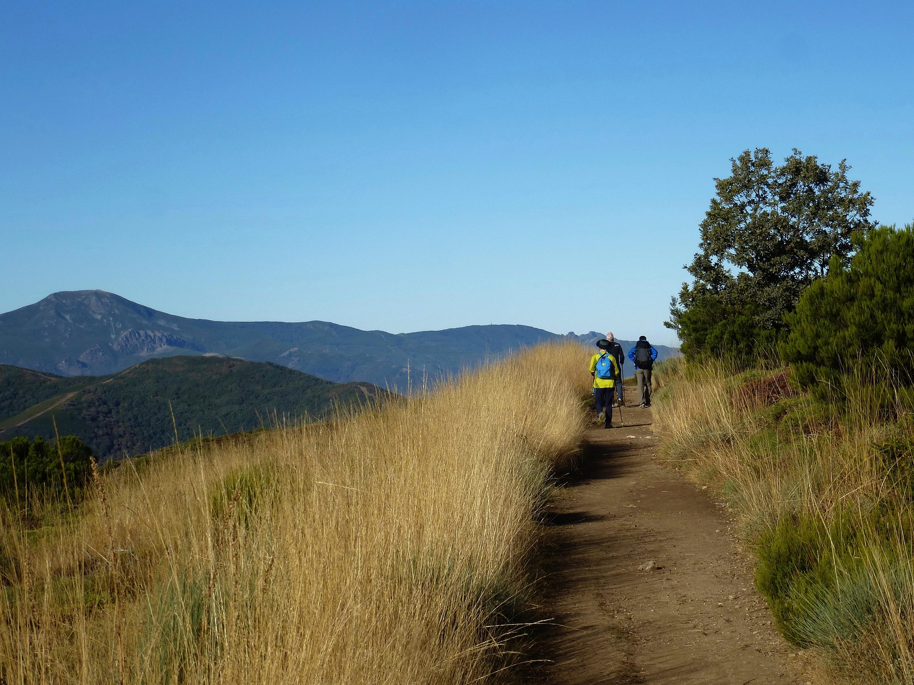

Sara · Easy Camino Santiago
Your Camino de Santiago expert
Free call back?
Leave your number and we will call you within 24h for free, no obligation.
Your number will only be used to call you. No spam.
Your Camino de Santiago expert
Leave your number and we will call you within 24h for free, no obligation.
Your number will only be used to call you. No spam.

820km of cliffs, wild beaches and soulful cities from the Basque Country to Santiago de Compostela. The greenest and least-travelled route. For pilgrims looking for something different.
The Northern Way is, for many veteran pilgrims, the most beautiful of all. It starts from Irún, on the French border beside the Bidasoa river, and follows the Cantabrian coastline for over 800 kilometres across four autonomous communities: the Basque Country, Cantabria, Asturias and Galicia. Unlike the French Way, which runs inland, the Northern Way constantly hugs the Cantabrian Sea, with its Atlantic waves, dark-sand beaches and vertiginous cliffs.
The gastronomy of the Northern Way is another of its great attractions. The Basque Country offers the world's finest pintxos in San Sebastián and Bilbao. Cantabria, with its mountain stew and Santoña anchovies. Asturias, with its fabada, cachopo and poured cider. And finally Galicia, with octopus, barnacles and Albariño wine. Every stage is a feast for the palate as well as the eyes.
The Northern Way requires somewhat greater fitness than the French Way: there is more accumulated elevation, some stretches are more isolated and hostel infrastructure is sparser. But pilgrims who do it agree: the scenery, the solitude and the authenticity make it a transformative experience. At Easy Camino Santiago we plan it for you in detail so you can enjoy it with complete peace of mind.


33 stages following the Cantabrian coast from the Basque Country to Santiago.
The world's finest food. The first stage of the Northern Way is a perfect aperitif: 25km from the border to San Sebastián (Donostia), with its legendary pintxos, La Concha Bay and the Old Town that is pure pilgrim pleasure. A hard start to beat.
Cliffs above the Cantabrian Sea. This Cantabrian stage follows spectacular cliffs overlooking the sea. Castro Urdiales, with its Gothic castle on the rocky headland, is one of the most beautiful towns on the Cantabrian coast. Laredo and its vast La Salvé beach close out a memorable day.
The most beautiful medieval village in Spain. This 37km stage connects the Cantabrian capital with Santillana del Mar, the village that Sartre called "the most beautiful in Spain" and which has preserved its intact medieval architecture since the 15th century. The Altamira Caves, with their prehistoric paintings, are just a step away.
Arrival in Galicia. The crossing of the Ribadeo estuary — the most spectacular on the Cantabrian coast — marks the entry into Galicia. The route enters the Galician Cantabrian Coast, with the Cathedral Beach a few kilometres away, a natural rock arch that can only be visited at low tide and is one of the most iconic images in Spain.
The final Galician stretch. From Mondoñedo — a city of great beauty with one of the finest Romanesque cathedrals in Galicia — the Northern Way converges with other routes to advance towards Santiago through Lugo and the heart of Galicia. The final kilometres before the Praza do Obradoiro are pure emotion.
All-inclusive for the Northern Way. No surprises, just scenery.
Private room in guesthouses and rural houses with views of the Cantabrian Sea
Hotels and charming rural houses along the main stages
Prices per person in double room. Single supplement available. Check availability.
Hostels, guesthouses or hotels booked in the Basque Country, Cantabria, Asturias and Galicia.
We collect your bag each morning and take it to the next accommodation throughout the route.
Your Camino passport to stamp at each stage along the Cantabrian coast.
Complete guide with maps, distances, elevation and warnings about coastal passages.
Emergency line available 24 hours. Especially useful on more isolated stretches.
We help you with all the paperwork to obtain your Compostela on arriving in Santiago.
Practical guides to plan every detail before you set off
The definitive list: technical clothing, footwear, first-aid kit and what you don't need to bring.
Read more → BudgetA real breakdown of costs: accommodation, food, transport and extras. From €35/day.
Read more → PlanningMay, June and September account for 60% of pilgrims. Find out which month is best for you.
Read more →The Northern Way is for those who want more than a route: they want an adventure. Tell us your dates and we will prepare your personalised route.